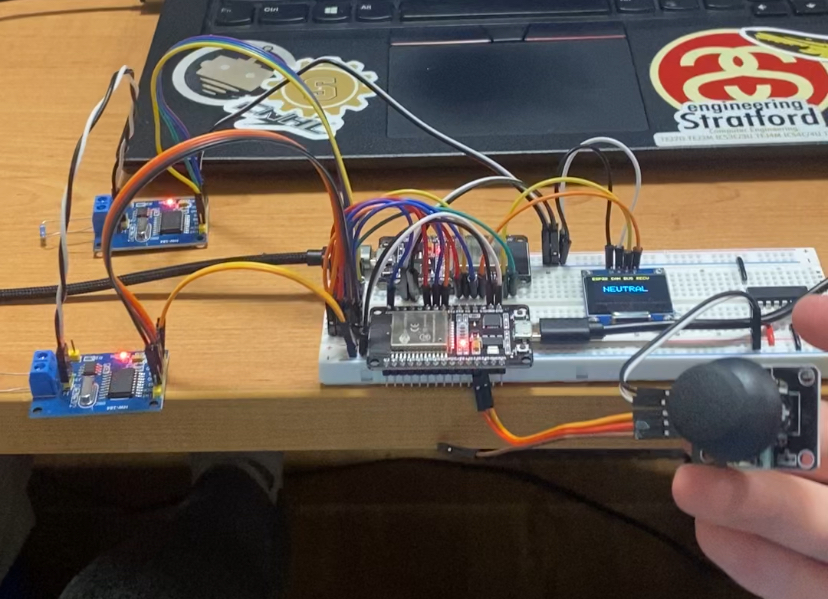

WEBots ESP32 Robot
Communications Architecture
Distributed CAN bus and micro-ROS communication layers for the WEBots humanoid robot platform.
ESP32-DevKit / ESP32DOIT

Problem Statement
— why this was builtSingle-ended serial or WiFi links are exceptionally vulnerable near PWM signals, motor drivers, and switching power supplies inside a compact robot chassis.
The WEBots humanoid robot platform requires a dependable, distributed infrastructure. Multiple ankle, knee, and structural subsystem motor controllers must achieve deterministic, noise-resistant telemetry under severe electrical noise. Concurrently, higher-level tactical behavioral states inside a ROS 2 graph need a straightforward integration pathway into individual MCU firmware layers.
This repository establishes a dual-layer communications prototype stack: a localized CAN 2.0B bus for noise-isolated frame delivery and an integrated micro-ROS node interface—deliberately built to scale forward into the electrical team's future custom PCB modules.
Technical Architecture
— distributed stack designThe system isolates low-level control loops from high-level state graphs by implementing a localized network topology alongside serial broker pipelines.
CAN 2.0B Local Layer
Low-level, noise-resistant bus handling joystick control telemetry over independent MCP2515 controllers at 500 kbps. Provides fire-and-forget robustness reinforced by target software confirmation strategies.
ID: 0x036 · ID: 0x037 (ACK)
micro-ROS Node Layer
High-level ROS 2 integration pathway utilizing specialized serial transport connecting the MCU cluster straight into a native ROS 2 Jazzy environment to enable graph participation.
/joystick_x_pub · /led_control
Implementation Details
— firmware structureSender TX & Retry Logic
Reads analog input stick axis configurations through onboard ADC pins. It packages the measurements into fixed 8-byte structures on CAN frame ID 0x036, then stalls up to 500 ms watching for an ACK packet on ID 0x037. The loop retries up to 3 times sequentially, targeting an execution pace of roughly 25 Hz.
Receiver RX & Filtering
Monitors incoming hardware line identifiers. Upon catching telemetry from ID 0x036, it instantly returns an acknowledgment frame back on ID 0x037. It applies a software 500-unit center deadzone to screen out telemetry sensor flicker, passing filtered tracking directions directly out onto an SSD1306 OLED screen display panel.
Active Graph Publishers
The dedicated micro-ROS subsystem handles independent parallel execution timers. Topic payload handler /joystick_x_pub streams data changes at low-latency 50 ms intervals, while /goose_calls broadcasts string notifications uniformly every 400 ms.
Subscribers & Services
An internal subscriber actively logs incoming instructions from /led_control, verifying text parameters ("ON"/"OFF") to drive internal hardware pins. A service layout framework is provisioned within the infrastructure for a multi-variable calculation interface (average4) using dedicated header definitions.
// CAN frame — joystick telemetry mapping canMsg.can_id = 0x036; canMsg.can_dlc = 8; memcpy(&canMsg.data[0], &VRX, sizeof(VRX)); memcpy(&canMsg.data[4], &VRY, sizeof(VRY)); // micro-ROS publisher setup macro rclc_publisher_init_default( &esp32_pub, &node, ROSIDL_GET_MSG_TYPE_SUPPORT(std_msgs, msg, Int32), "joystick_x_pub");
Key Results
— performance benchmarksStable data transfers over MCP2515 physical transceivers under simulated node environments.
Deterministic local timing loop including reliable 500 ms ACK timeouts and a 3x packet retry limit.
High-frequency micro-ROS publisher loop feeding joystick measurements straight into the ROS 2 Jazzy ecosystem.
Design Challenges
— engineering decisionsElectrical noise in robot control buses
Single-ended links fail near high-power PWM/motor drivers. CAN differential signaling adds wiring overhead but guarantees excellent physical noise immunity. I selected CAN 2.0B over external MCP2515 logic because it guarantees predictable hardware timelines and directly aligns with our future custom PCB components.
Reliable local command delivery
Standard fire-and-forget topologies completely obscure dropped packets. Introducing an application-layer tracking ACK costs system bus bandwidth but provides direct transmission visibility. I addressed this by structuring a dedicated confirmation frame on ID 0x037 accompanied by fixed retry windows.
Joystick drift and deadzone tuning
Raw analog potentiometer readings exhibit persistent value drift around center coordinates, generating false direction transitions. Expanding the deadzone improves center-state consistency but reduces control resolution. Settled on a balanced 500-unit deadzone threshold for practical module evaluations.
Transitioning prototypes into ROS 2
While CAN is optimized for immediate joint movements, complex behaviors require structured graph accessibility. Implementing micro-ROS over serial links reduces firmware complexity compared to custom fragmentation logic but creates a dependency on an active host middleware agent. Built the serial node first to clear basic execution criteria.
Technologies Used
— applied expertiseBuild and Run
— project reproductionCAN Bus Subsystem Compilation
Requires an SPI interface connection link joining the host MCU and the MCP2515 driver board.
| Signal | ESP32 Pin | MCP2515 Pin |
|---|---|---|
| SCK | GPIO 18 | SCK |
| MISO | GPIO 19 | SO |
| MOSI | GPIO 23 | SI |
| CS | GPIO 5 | CS |
| GND | GND | GND |
| 3.3V | 3.3V | VCC |
cd can-bus/ESP_CAN_SEND platformio run --target upload
micro-ROS Node Initialization
Deploys a serial transport link communication endpoint directly matching your local device mount parameters.
# Compile and flash local node cd microros platformio run --target upload # Fire up the external broker agent ros2 run micro_ros_agent micro_ros_agent \ serial --dev /dev/ttyUSB0
webots-architecture/ ├── can-bus/ │ ├── ESP_CAN_SEND/ # Joystick data processing and sender node source │ └── ESP_CAN_RECV/ # Display logic, target tracking, and ACK transceiver └── microros/ └── src/ # Interactive publishers and subscriber routines
# Verify runtime topic routing
ros2 topic list
ros2 topic echo /joystick_x_pub
ros2 topic pub /led_control std_msgs/msg/String "{data: 'ON'}"
Status & Roadmap
— future developmentWorking Elements
- CAN sender runs telemetry conversion at 25 Hz loops
- Receiver decodes line signals and returns real-time ACKs
- OLED interface accurately renders active spatial directions
- micro-ROS link maintains serial connectivity with active agent
Current Limitations
- Central diagnostics error reporting is not yet instantiated
- Deadzones map to experimental stick hardware instead of actuators
- Client nodes are fully structural but missing dynamic interaction loops
- Lacks custom multi-packet framing/reassembly capabilities
average4 service handling routines using clean ROSIDL compilation steps. Construct a robust multi-packet assembly layer over standard CAN channels to fragment payloads exceeding 8 bytes. Validate comprehensive stack reliability against custom layout PCBs under high physical motor brush loads.
Interested in the architecture?
Explore the complete implementation repository or return to inspect additional embedded engineering developments.